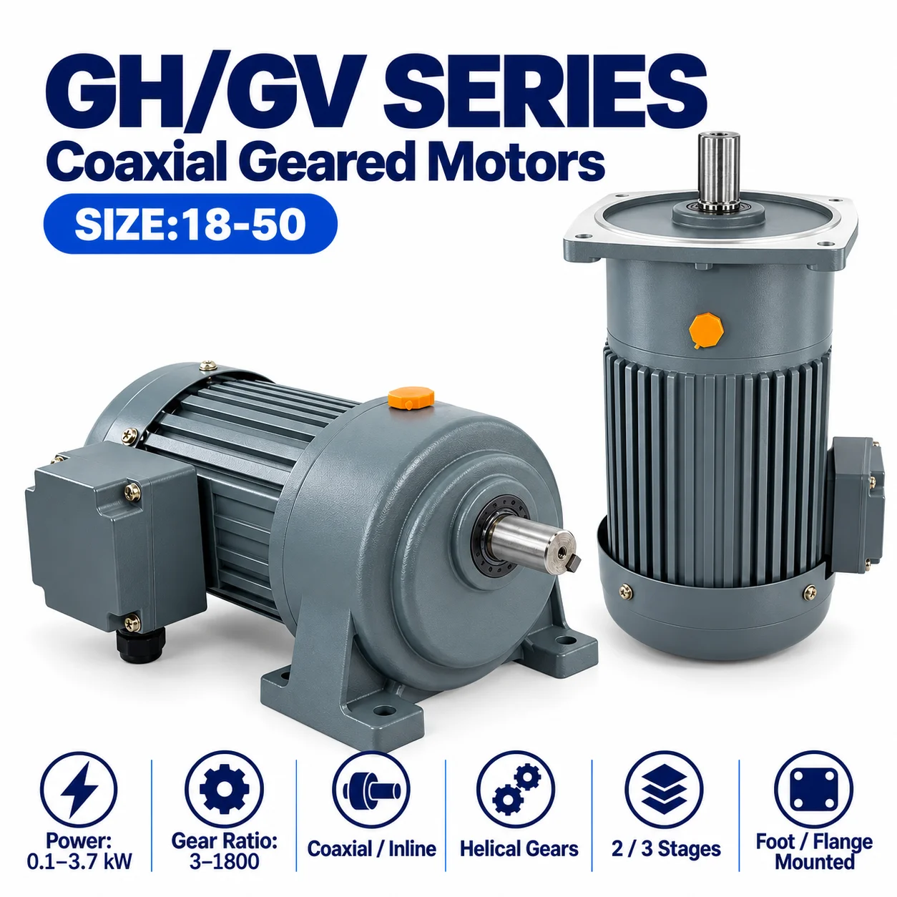
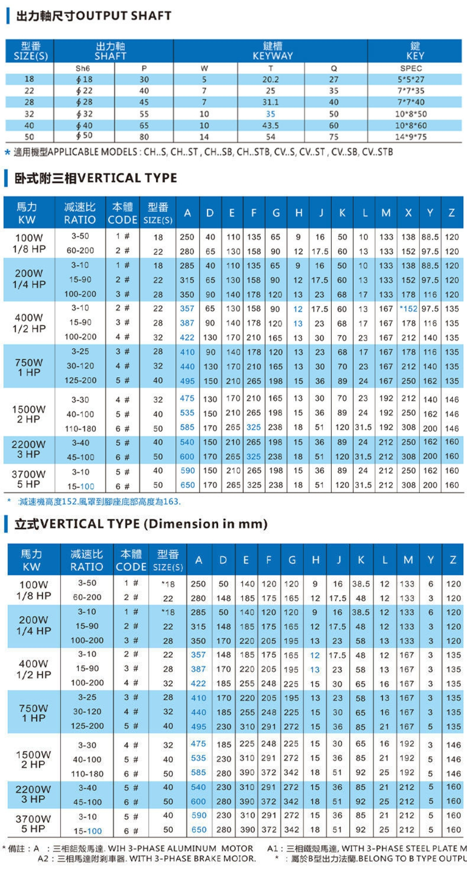

GH Foot Mounting
A GH gear motor sits on mounting feet that bolt to a flat base, such as a conveyor frame or machine platform. The base supports the unit and sets the height of the output shaft relative to the driven equipment.
Before ordering, check the following dimensions on the GH drawing:
- Foot mounting-hole spacing: measure centre to centre in both directions and confirm hole diameter.
- Output shaft centre height: measure from the bottom of the mounting feet to the centre of the output shaft.
- Output shaft dimensions: check shaft diameter, protruding length and keyway dimensions.
Shaft centre height is especially important for replacements. Even when the foot holes line up, a different shaft height can affect alignment with the existing coupling or driven shaft.
GV Flange Mounting
A GV gear motor attaches directly to a mating surface on the machine. The flange bolt holes secure the unit, while the locating pilot, where provided, centres the gearbox on the mating opening.
Before ordering, check the following dimensions on the GV drawing:
- Flange mounting pattern: confirm the number and size of bolt holes and the bolt-circle diameter for a circular pattern.
- Locating pilot: check the pilot diameter and how far it projects from the flange face.
- Output shaft dimensions: verify shaft diameter, keyway and protruding length measured from the flange mounting face.
The flange outside diameter is useful for checking clearance. For fit, compare the bolt pattern and locating pilot with the machine's mating surface.
How to Check a Replacement
| What to check | GH foot-mounted | GV flange-mounted |
|---|---|---|
| Where it attaches | Flat base or machine frame | Mating plate or machine housing |
| How it bolts on | Foot-hole spacing in both directions | Flange-hole pattern and bolt circle |
| How the output shaft lines up | Shaft centre height from the mounting base | Pilot fit and shaft position relative to flange face |
| What connects to the load | Shaft diameter, protruding length and keyway | Shaft diameter, protruding length and keyway |
GH/GV Dimension Reference

What to Send for a Replacement Check
If an existing nameplate reads GH32-400W-200S, send SMK Transmission the complete model number, a clear nameplate photo and a photo showing how the unit is mounted. For a GH unit, include foot-hole spacing, shaft centre height and output-shaft dimensions. For a GV unit, include the flange pattern, locating pilot and output-shaft dimensions.
Need a GH or GV dimensional drawing? Send your model number or mounting sketch to info@smktrans.com.
Frequently Asked Questions
Can a GH foot-mounted unit replace a GV flange-mounted unit?
Not without checking the machine interface. The attachment method, shaft alignment and installation space are different.
Is the motor power enough to identify a replacement?
No. Confirm the complete model, ratio, output shaft, mounting interface and dimensions in addition to motor power.